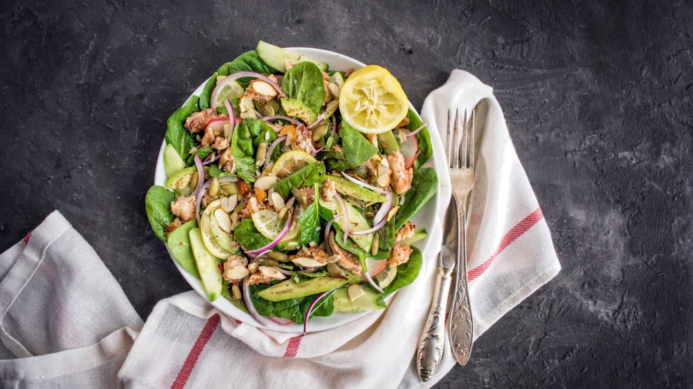

If you don't have iron willpower, then hunger will cause
you to give up on these plans quickly.
1. Cut Back on Sugars and Starches
The most important part is to cut back on sugars and starches (carbs). When you do that, your hunger levels go down and you end up eating fewer calories. Now instead of burning carbs for energy, your body starts feeding off of stored fat. Another benefit of cutting carbs is that it lowers insulin levels, causing your kidneys to shed. This reduces bloat and unnecessary water weight. It is not uncommon to lose up to 10 pounds (sometimes more) in the first week of eating this way, both body fat and water weight. The low-carb group is eating until fullness, while the low-fat group is calorie-restricted and hungry. Cut the carbs and you will start to eat fewer calories automatically and without hunger. Put simply, cutting carbs puts fat loss on autopilot.
SUMMARY
Removing sugars and starches (carbs) from your diet will reduce your appetite, lower your insulin levels and make you lose weight without hunger.
2. Eat Protein, Fat and vegetables
Each one of your meals should include a protein source, a fat source and low-carb vegetables. Constructing your meals in this way will automatically bring your carb intake into the recommended range of 20–50 grams per day. Protein Sources Meat: Beef, chicken, pork, lamb, etc. Fish and Seafood: Salmon, trout, shrimp, etc. Eggs: Whole eggs with the yolk are best. The importance of eating plenty of protein cannot be overstated. This has been shown to boost metabolism by 80 to 100 calories per day.High-protein diets can also reduce cravings and obsessive thoughts about food by 60%, reduce the desire for late-night snacking by half, and make you so full that you automatically eat 441 fewer calories per day — just by adding protein to your diet . When it comes to losing weight, protein is the king of nutrients. Period. ● Low-Carb Vegetables ● Broccoli ● Cauliflower ● Spinach ● Tomatoes ● Kale ● Brussels sprouts ● Cabbage ● Swiss chard ● Lettuce ● Full list here. Don’t be afraid to load your plate with these low-carb vegetables. You can eat massive amounts of them without going over 20–50 net carbs per day. A diet based mostly on meat and vegetables contains all the fiber, vitamins and minerals you need to be healthy. Fat sources ● Olive oil ● Coconut oil ● Avocado oil ● Butter Eat 2–3 meals per day. If you find yourself hungry in the afternoon, add a 4th meal. Don’t be afraid of eating fat, as trying to do both low-carb AND low-fat at the same time is a recipe for failure. It will make you feel miserable and abandon the plan.
SUMMARY
Assemble each meal out of a protein source, a fat source and low-carb vegetables. This will put you in the 20–50 gram carb range and significantly lower your hunger levels.
3. Lift Weights 3 Times Per Week
You don't need to exercise to lose weight on this plan, but it is recommended. The best option is to go to the gym 3–4 times a week. Do a warm-up and lift some weights. If you're new to the gym, ask a trainer for some advice. By lifting weights, you will burn lots of calories and prevent your metabolism from slowing down, which is a common side effect of losing weight . Studies on low-carb diets show that you can even gain a bit of muscle while losing significant amounts of body fat . If lifting weights is not an option for you, then doing some cardio workouts like walking, jogging, running, cycling or swimming will suffice.
SUMMARY
It is best to do some sort of resistance training like weight lifting. If that is not an option, cardio workouts are also effective.
Optional — Do a "Carb Refeed" Once Per Week
You can take one day off per week where you eat more carbs. Many people prefer Saturday. It is important to stick to healthy carb sources like oats, rice, quinoa, potatoes, sweet potatoes, fruit, etc. But only this one higher carb day — if you start doing it more often than once per week you're not going to see much success on this plan. If you must have a cheat meal and eat something unhealthy, then do it on this day. Be aware that cheat meals or carb refeeds are NOT necessary, but they can boost some fat-burning hormones like leptin and thyroid hormones . You will gain some weight during your refeed day, but most of it will be water weight and you will lose it again in the next 1–2 days.
SUMMARY
Having one day each week where you eat more carbs is perfectly acceptable, although not necessary. It is NOT necessary to count calories as long as you keep the carbs very low and stick to protein, fat and low-carb vegetables. The main goal of this plan is to keep carbs under 20–50 grams per day and get the rest of your calories from protein and fat. ● Eat a high-protein breakfast. Eating a high-protein breakfast has been shown to reduce cravings and calorie intake throughout the day ● Avoid sugary drinks and fruit juice. These are the most fattening things you can put into your body, and avoiding them can help you lose weight . ● Drink water a half hour before meals. One study showed that drinking water a half hour before meals increased weight loss by 44% over 3 months . ● Choose weight loss-friendly foods . Certain foods are very useful for losing fat. Here is a list of the 20 most weight loss-friendly foods on earth. ● Eat soluble fiber. Studies show that soluble fibers may reduce fat, especially in the belly area. Fiber supplements like glucomannan can also help . ● Drink coffee or tea. If you're a coffee or tea drinker, then drink as much as you want as the caffeine can in them boost your metabolism by 3–11% . ● Eat mostly whole, unprocessed foods. Base most of your diet on whole foods. They are healthier, more filling and much less likely to cause overeating. ● Eat your food slowly. Fast eaters gain more weight over time. Eating slowly makes you feel more full and boosts weight-reducing hormones. ● Weigh yourself every day. Studies show that people who weigh themselves every day are much more likely to lose weight and keep it off for a long time . ● Get a good night's sleep, every night. Poor sleep is one of the strongest risk factors for weight gain, so taking care of your sleep is important .
DIET PLANS
A diet is best described as a fixed plan of eating and drinking where the
type and amount of food are planned out in order to achieve weight loss or
follow a particular lifestyle.
1. Atkins Diet

The Atkins diet, or Atkins nutritional approach, focuses on controlling the levels of insulin in the body through a low-carbohydrate diet. If people consume large amounts of refined carbohydrates, their insulin levels rise and fall rapidly. Rising insulin levels trigger the body to store energy from the food that is consumed, making it less likely that the body will use stored fat as a source of energy. Therefore, people on the Atkins diet avoid carbohydrates but can eat as much protein and fat as they like. ● Although popular for some time, the Atkins Diet comes with certain risks. Individuals considering the Atkins Diet should speak with their doctor.
2.The Zone Diet
The Zone diet aims for a nutritional balance of 40 percent carbohydrates, 30 percent fats, and 30 percent protein in each meal. The focus is also on controlling insulin levels, which may result in more successful weight loss and body weight control than other approaches. The Zone diet encourages the consumption of high-quality carbohydrates - unrefined carbohydrates, and fats, such as olive oil, avocado, and nuts.
3. Ketogenic Diet
The ketogenic diet has been used for decades as a treatment for epilepsy and is also being explored for other uses. It involves reducing carbohydrate intake and upping fat intake. It sounds contrary to common sense, but it allows the body to burn fat as a fuel, rather than carbohydrates. Healthy fats, such as those in avocados, coconuts, Brazil nuts, seeds, oily fish, and olive oil are liberally added to the diet to maintain an overall emphasis on fat. The diet causes the breakdown of fat deposits for fuel and creates substances called ketones through a process called ketosis. ● This diet has risks including ketoacidosis for people with type 1 diabetes, however, and may result in diabetic coma and death. Although most studies are 2 years or less, there is some promising research in relation to diabetes management, metabolic health, weight loss, and body composition change.
4. Vegetarian Diet
Many people choose a vegetarian diet for ethical reasons, as well as health. There are various types of vegetarians: ● Lacto-vegetarian ● fruitarian vegetarian ● lacto-ovo vegetarian ● living food diet vegetarian ● Ovo-vegetarian ● pesco-vegetarian ● semi-vegetarian The majority of vegetarians are lacto-ovo vegetarians, in other words, they do not eat animal-based foods, except for eggs, dairy, and honey. Studies over the last few years have shown that vegetarians have a lower body weight, suffer less from diseases, and typically have a longer life expectancy than people who eat meat.
5. Vegan Diet
Veganism is more of a way of life and a philosophy than a diet. A vegan does not eat anything that is animal-based, including eggs, dairy, and honey. Vegans do not usually adopt veganism just for health reasons, but also for environmental, ethical, and compassionate reasons. Vegans believe that modern intensive farming methods are bad for our environment and unsustainable in the long-term. If everybody ate plant-based food, the environment would benefit, animals would suffer less, more food would be produced, and people would generally enjoy better physical and mental health, vegans say.
6. Weight Watchers Diet

Weight Watchers focuses on losing weight through diet, exercise, and a support network. Weight Watchers Inc. was started in the 1960s by a homemaker who had lost some weight and was concerned she might put it back on. So, she created a network of friends. Weight Watchers is a huge company, with branches all over the world. Dieters can join either physically and attend regular meetings, or online. In both cases, there is lots of support and education available for the dieter.
7. South Beach Diet

The South Beach diet was started by a cardiologist, Dr. Agatston, and a nutritionist, Marie Almon. It focuses on the control of insulin levels, and the benefits of unrefined slow carbohydrates versus fast carbohydrates. Dr. Agatston devised the South Beach diet during the 1990s because he was disappointed with the low-fat, high-carb diet backed by the American Heart Association. He believed that low-fat regimes were not effective over the long-term.
8. Raw food Diet
The raw food diet, or raw foodism, involves consuming foods and drinks that are not processed, are completely plant-based, and ideally organic. Raw foodists believe that at least three-quarters of a person's food intake should consist of uncooked food. A significant number of raw foodists are also vegans and do not eat or drink anything that is animal based. There are four main types of raw foodists: raw vegetarians, raw vegans, raw omnivores, and raw carnivores.
9. Mediterranean Diet
The Mediterranean diet is Southern European, and more specifically focuses on the nutritional habits of the people of Crete, Greece, and southern Italy. Nowadays, Spain, southern France, and Portugal are also included, even though Portugal does not touch the Mediterranean Sea. The emphasis is on lots of plant foods, fresh fruits as dessert, beans, nuts, whole grains, seeds, olive oil as the main source of dietary fats. Cheese and yogurts are the main dairy foods. The diet also includes moderate amounts of fish and poultry, up to about four eggs per week, small amounts of red meat, and low to moderate amounts of wine. Up to one-third of the Mediterranean diet consists of fat, with saturated fats not exceeding 8 percent of calorie intake. The Mediterranean diet is the most extensively studied diet to date, with reliable research supporting its use for improving a person's quality of life and lowering disease risk.